Version de travail · non publiée
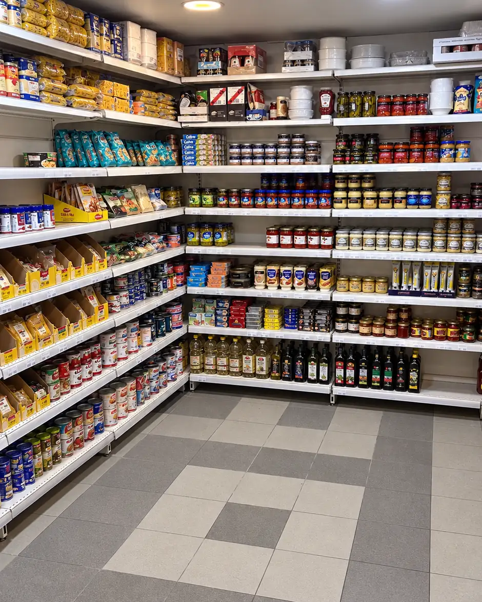
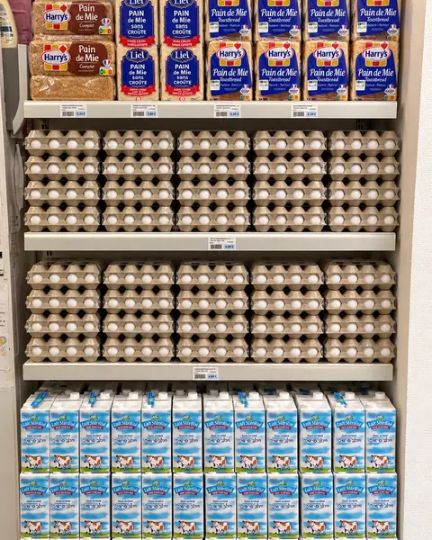
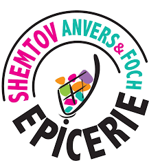
Épicerie casher · Strasbourg
ShemtovFoch
Les courses du quotidien, de Chabbat et des fêtes, au 6 rue du Maréchal-Foch.
Horaires dans les infos pratiques
Le magasin
Les courses de tous les jours, Chabbat et les fêtes, au même endroit.
Shemtov Foch est votre épicerie casher de proximité à Strasbourg. Retrouvez-nous au 6 rue du Maréchal-Foch.
Découvrez une sélection de produits d'épicerie, de produits frais et de surgelés. Préparez vos courses du quotidien et vos repas de Chabbat : notre équipe vous accueille et vous accompagne dans vos choix.
Pour connaître nos horaires et les produits disponibles, contactez-nous au 03 88 11 96 92.
- Du dimanche au vendrediFermé le samedi
- CasherÉpicerie référencée par le Consistoire Israélite du Bas-Rhin. Voir la liste
- Strasbourg6 rue du Maréchal-Foch, 67000
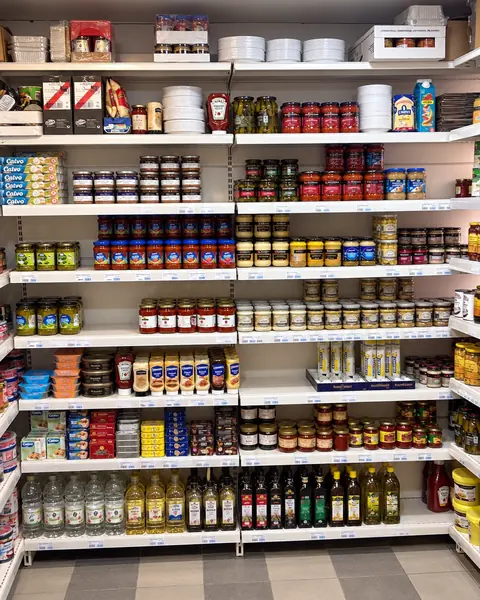
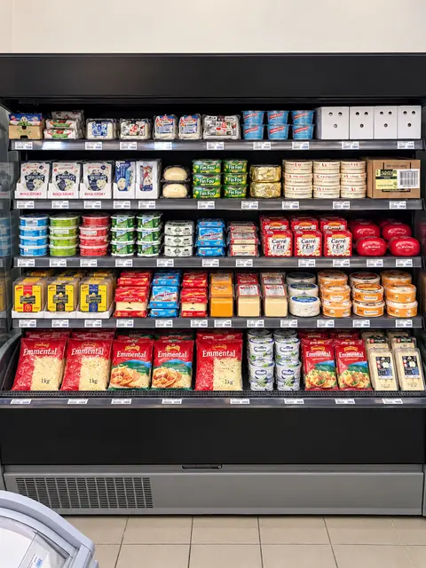
Nos rayons
Six univers, du frais à l'épicerie.
Chaque univers renvoie à son emplacement sur le plan du magasin.
-
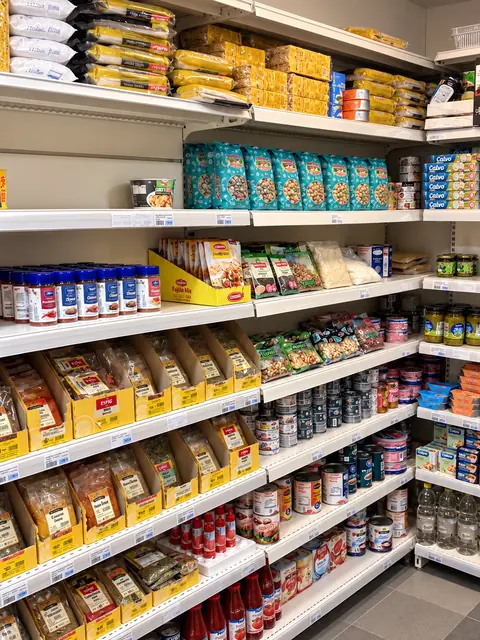
Épicerie
Pâtes, conserves, épices, sauces, huiles, olives et condiments, vaisselle jetable pour recevoir, et des produits sans gluten et végan.
-
Produits frais
Fromages, yaourts, beurre et crèmerie, lait, œufs et pain de mie, salades et spécialités traiteur.
-
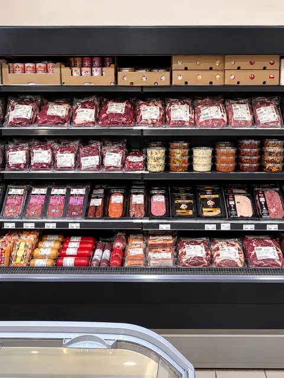
Viandes et poissons
Viande et charcuterie au frais, saumon fumé, surimi et poissons panés, bœuf et poulet surgelés.
-
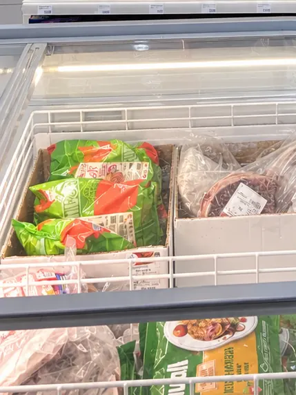
Surgelés
Glaces et pizzas, légumes, frites et pommes de terre, poisson, bœuf et poulet.
-
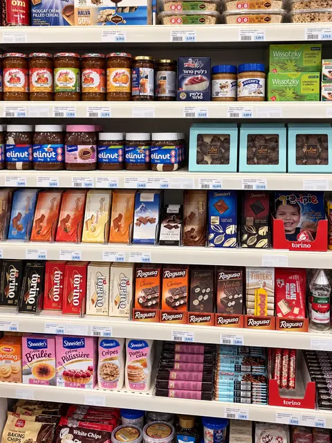
Sucré et snacks
Biscuits, gâteaux et crackers, chocolats et pâtes à tartiner, confitures, bonbons, chips et produits pour la pâtisserie.
-
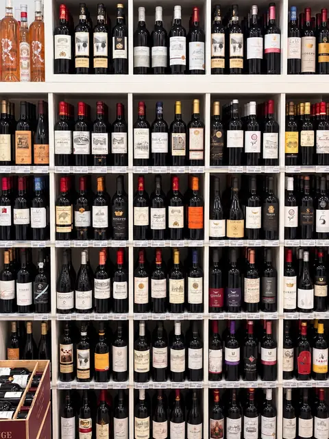
Boissons et vins
Sodas et boissons, vins casher rouges, blancs et rosés, et une sélection de spiritueux.
L'abus d'alcool est dangereux pour la santé, à consommer avec modération.
Visite du magasin
Faites le tour, de l'entrée jusqu'à l'épicerie.
Plan indicatif, non à l'échelle. Touchez une zone du plan pour aller à l'étape correspondante.
-
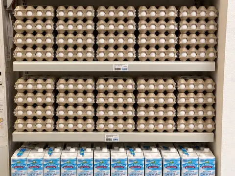
Étape 1 sur 7
L'entrée et la caisse
En entrant, la caisse est sur la droite, avec le lait, les œufs et le pain de mie juste à côté, dans l'angle.
-
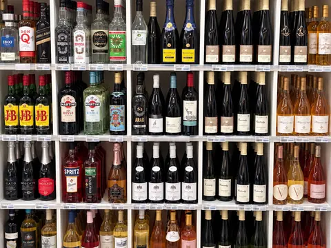
Étape 2 sur 7
Vins et chocolat
Sur la gauche, le grand rayon des vins le long du mur, et le rayon chocolat près du mur du bas.
L'abus d'alcool est dangereux pour la santé, à consommer avec modération.
-
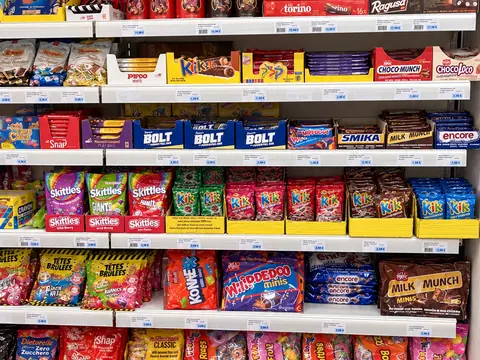
Étape 3 sur 7
Le centre du magasin
Deux congélateurs côte à côte, légumes et frites d'un côté, bœuf et poulet de l'autre, le rayon bonbons, puis les chips et les crackers.
-
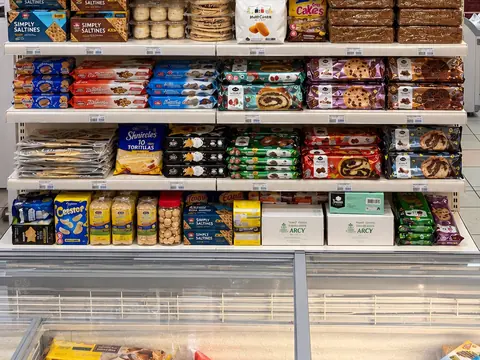
Étape 4 sur 7
Congélateurs et gâteaux
En remontant vers le fond : le congélateur à poisson, celui des glaces et des pizzas, puis l'étagère à gâteaux.
-
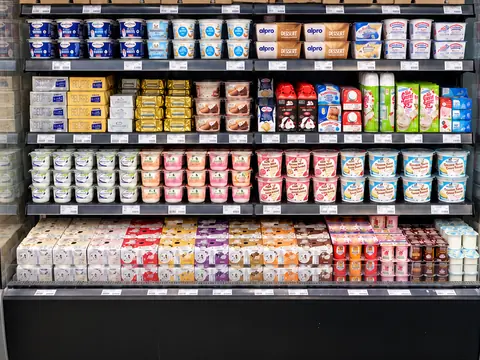
Étape 5 sur 7
Fromages et crèmerie
Contre le mur de gauche, le frigo à fromages puis le frigo des yaourts et de la crèmerie.
-
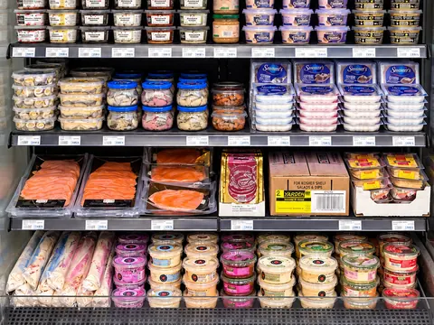
Étape 6 sur 7
Poisson, viande et charcuterie
Contre le mur de droite : le frigo poisson avec le surimi et les poissons panés, le frigo viande et charcuterie, puis les chocolats et les confitures.
-
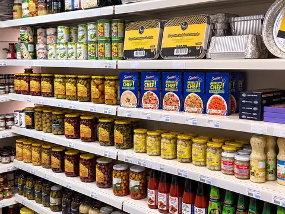
Étape 7 sur 7
L'épicerie, au fond
Au fond à gauche, l'épicerie : conserves, thon et maquereaux, sauces tomates et pesto, épices, couverts, assiettes et verres.
Infos pratiques
Venir chez Shemtov Foch
Horaires
Horaires habituels
| Lundi | 8h – 20h |
|---|---|
| Mardi | 8h – 20h |
| Mercredi | 8h – 20h |
| Jeudi | 8h – 20h |
| Vendredi | 8h – 17h |
| Samedi | Fermé |
| Dimanche | 9h30 – 13h |
Horaires habituels, susceptibles de changer les jours de fête.
Fêtes à venir
Chaque fête commence la veille au soir. Les horaires exceptionnels s'affichent en haut de page.
- 4décHanoukahDu soir du 4 au 12 décembre 2026
- 23janvTou biChvat23 janvier 2027
- 22marsPourimDu soir du 22 au 23 mars 2027
- 21avrPessahDu soir du 21 au 29 avril 2027
- 10juinChavouotDu soir du 10 au 12 juin 2027
- 1octRoch Hachana 5788Du soir du 1er au 3 octobre 2027